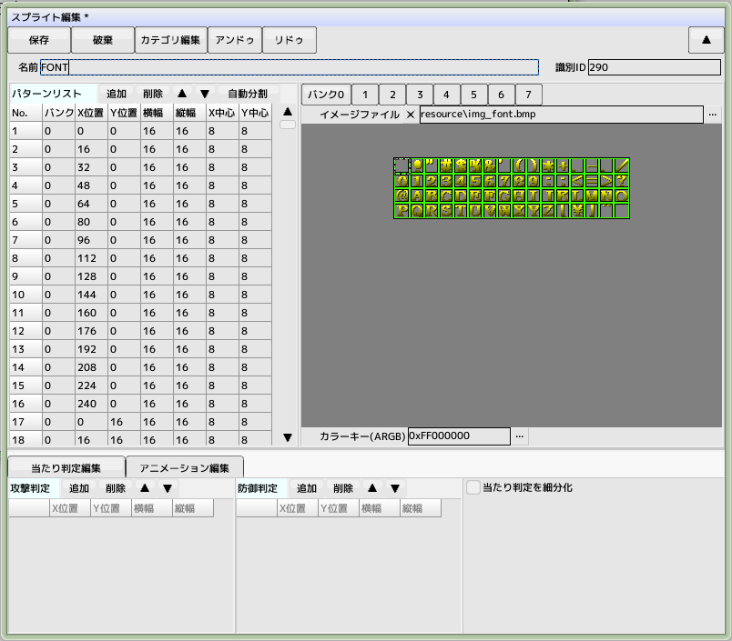
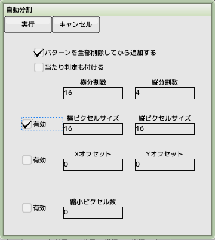
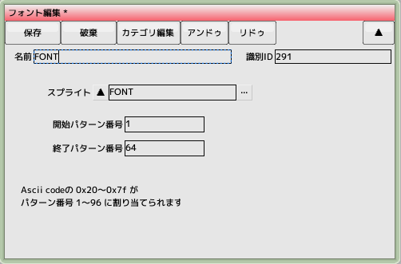
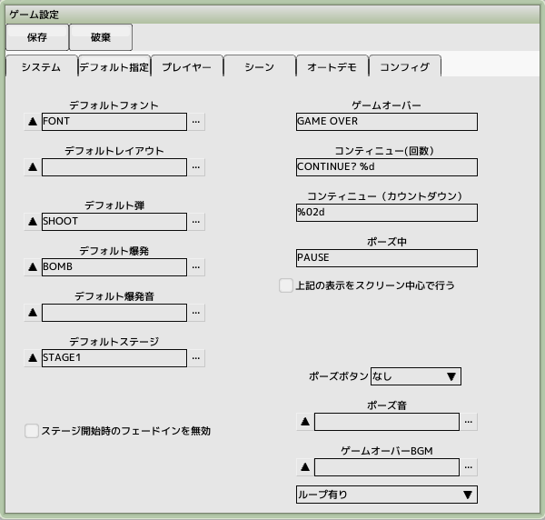

■元のページへ戻る
■元のページへ戻る
12.フォントを作成する
スコアやランキングを表示するためのフォントを作成します
プロジェクトのフォントから新規作成を選んでください

フォント用スプライトを作成する
スプライトを新規作成し、名前を'FONT'と設定します
このフォントは数字＋英大文字＋記号の64文字となっています
自動分割を使ってパターンを作成します。当たり判定は必要ありません
フォント1文字のサイズは偶数サイズになるようにしてください


フォントの設定
先ほど作成したフォントにスプライトを登録します
パターン番号は64までですのでそのように設定します

デフォルトフォントの設定
ゲーム設定のデフォルト指定タブを開き、デフォルトフォントへ先ほどの'FONT'を登録します
テストプレイで画面内のフォントが置き換われば完了です
■ページ上部へ戻る